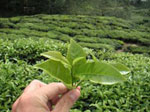

Benefits of Tea
Though Tea is consumed in highest quantity all most all over the World after water, the awareness of sincere benefits of Tea is very low in common people as compared to health conscious mass. A recent scientific research clarifies the significant positive characteristics of Tea has nutritional properties and is rich in vitamins and minerals. Thus maintains the body balance apart from providing nutrition. Experiments have proved that tea may have medicinal properties, if not mystical ones. “Camellia Sinuses” is rich in a broad class of chemicals found in fruits and vegetables called “POLYPHENOLS” (Tea Antioxidants) is present in Tea and help fend off Cancer and Heart diseases.
Drinking tea every day can keep the doctor at bay :
A research also shows how thing like pollution or too much sun can be harmful to us as we live our modern. Our bodies are being attacked constantly from the inside by unstable substances called free radicals that may damage otherwise healthy cells. Free radical damage has been implicated in diseases such as heart disease, stroke and cancers.
It is thought that one of the ways of combating these free radicals is by regularly consuming foods and drinks that are rich in substances called antioxidants and you can top up your daily antioxidant intake by drinking tea. That's because tea is widely known to be rich in a group of antioxidants.
|  |
A national study of 1,764 women in Saudi Arabia showed that tea drinkers were 19% less likely to suffer from cardiovascular disease than non-tea drinkers. In Holland, 806 men who consumed the greatest amount of catechins (a type of flavonoid) were 51% less likely to die of heart disease during the 10-year study period, compared with men who consumed the lowest amount.
Black tea is virtually calorie-free (1 calorie per 100 ml) and sodium free, therefore a suitable beverage for individuals on low calorie or low sodium diet. Tea includes fluoride, traces of vitamins A, K, C, B carotene and B vitamins.
Tea is a pleasant, popular, socially accepted, economical and safe drink that is enjoyed every day by hundreds of millions of people across all continents.
So, enjoy your cup of tea and stay assured that it is doing well to your system.
back to home